I built and sold a technology company after scaling it with the Metronomics operating system.
Now I coach founders to do in three years what took me thirty.
03 comp-decision
Opening
Introduce yourself and your role.
01
Time here
How long have you been with the company?
02
Function
What is your functional role?
03
Accountability
What is the #1 thing you are accountable for?
04
Success
How do you measure success in your role numerically?
04 comp-story
Share professional good news in 5–10 seconds.
05 comp-decision
Opening
Get to know the people behind the roles.
01
Where?
Where were you born?
02
Family
What number child are you, out of how many?
03
A memory
Describe a memorable event from before age 12.
06 comp-decision
Opening
Bring your best contribution.
Engage
Be present
Discuss, collaborate and listen.
Challenge
Challenge yourself and each other
Bring the difficult facts forward.
Trust
No blame. No shame.
Make it safe to speak honestly.
07 comp-story
What would make these two days valuable?
Write your answer, then share it with the team.
08 comp-decision
Opening
Agree on the direction. Then commit to the work.
Day 1
Shared direction
Functions, purpose, values, ambition and the three-year plan.
Day 2
Shared commitments
Annual and quarterly priorities, individual ownership and meeting rhythm.
09 comp-decision
Opening
The turning point was building a system.
Before
25 years
Building Rise Vision without a formal operating system.
Turning point
A coach + Metronomics
A shared system for the team.
After
Five years later
Sold the company after sustained profitable growth.
10 comp-story
The team owns the plan. I help you build it.
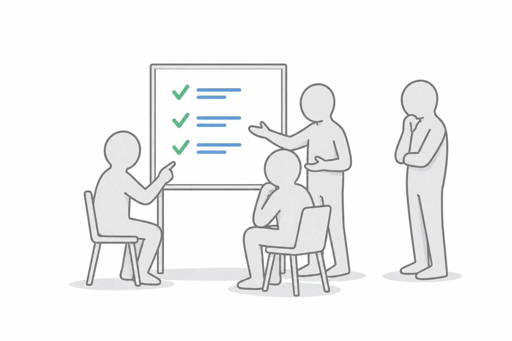
11 comp-story
Metronomics connects the team and the business.
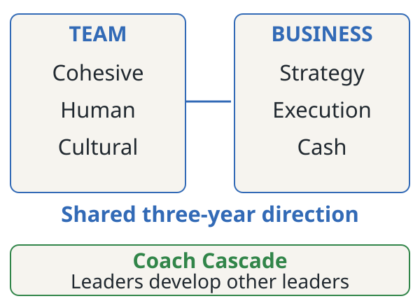
12 comp-decision
Overview
A winning team needs a shared way to work.
Playbook
A repeatable system
A common way to build and execute the plan.
Playing field
A visible scoreboard
The team can see the plan and its progress.
Coach
An outside perspective
Challenge assumptions and uncover blind spots.
13 comp-decision
Overview
Build the team that can deliver the plan.
Team
Cohesive
Trust, constructive conflict and commitment to team results.
Team
Human
Clear roles, expectations and accountability.
Team
Cultural
Shared purpose, values and long-term ambition.
14 comp-decision
Overview
Connect direction, delivery and cash.
Business
Strategy
Where we will compete and how we will achieve our goals.
Business
Execution
Owned priorities, visible measures and a meeting rhythm.
Business
Cash
Understand cash needs and forecast through operating drivers.
15 comp-story
The team and the plan must develop together.
16 comp-decision
What could limit your growth?
Leadership
Leadership capacity
Can leaders grow the team as the business grows?
Market
Market expertise
Do you understand the market you intend to serve?
Operations
Scalable infrastructure and processes
Can your systems support the next stage of growth?
17 comp-decision
Overview
Growth builds on the foundation.
Ease
Foundation
Working cash and execution; an A-player, cohesive leadership team; mapped strategy.
Speed
Momentum
Keep the foundation. Validate strategy, deepen trust and begin coaching others.
Confidence
Compounding
Sustain the systems. Coaching flows throughout the organization.
18 comp-decision
Overview
Teams learn to work through disagreement.
Foundation
Forming and storming
Build trust and learn to raise difficult issues.
Momentum
Norming
Establish shared expectations and accountability.
Compounding
Performing
Work together effectively toward shared results.
19 comp-decision
Overview
Where is the foundation still incomplete?
01
Cash
Is your cash system working?
02
Execution
Does day-to-day execution work without you?
03
People
Would you fight to keep all your team members?
04
Strategy
Do you have a clear, concise mapped strategy?
20 comp-story
Does the leadership team put team results first?
21 comp-story
Which growth phase are you in now?
Foundation, Momentum or Compounding?
Name the evidence. Identify the conditions still missing.
22 comp-story
What functions does the business need?
List the work the company must perform to operate successfully.
23 comp-story
A traditional chart starts with people and titles.
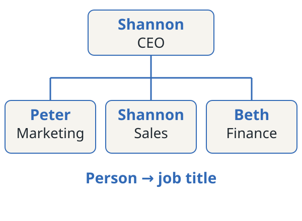
24 comp-story
A Function Chart starts with the work.
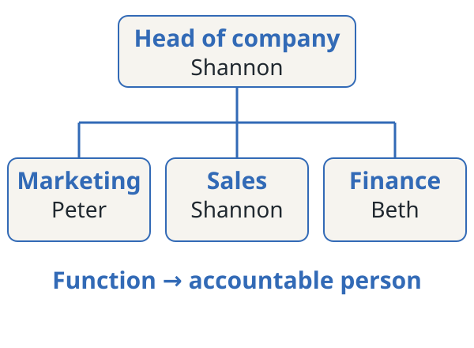
25 comp-story
Give every function one accountable owner.
One person owns the result. Others may contribute to the work.
26 comp-decision
Function chart
Where is ownership unclear?
One person
Several functions?
Make the load visible.
One function
Several owners?
Agree who is accountable.
A gap
No owner?
Name the person who will own it.
27 comp-story
Key Function Flow Map (KFFM)
Show how the key functions work together to generate cash.
Begin with the 3–5 functions that make the company money.
28 comp-story
Arrange the functions as the work flows.
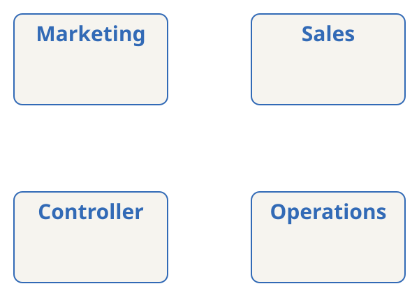
29 comp-story
Put an owner beside every function.
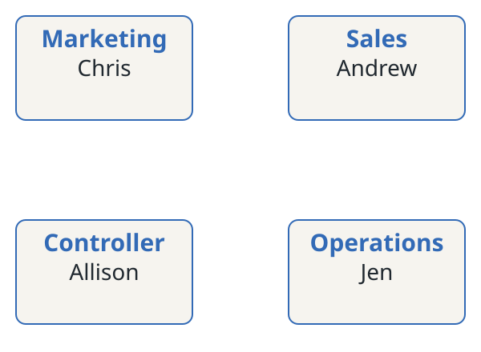
30 comp-story
How well is each function working?
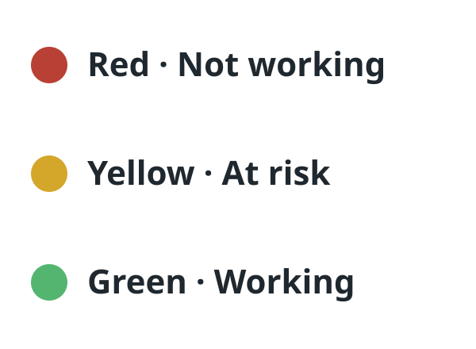
31 comp-story
Make the current condition visible.
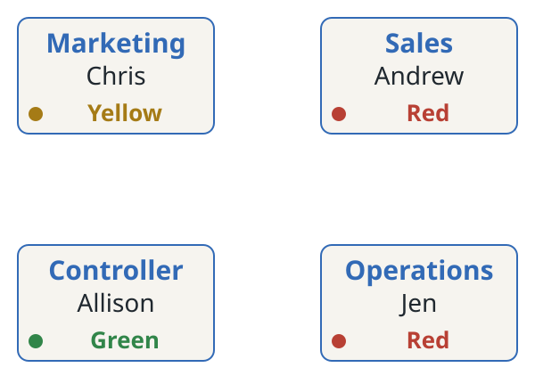
32 comp-story
Connect the handoffs that lead to cash.
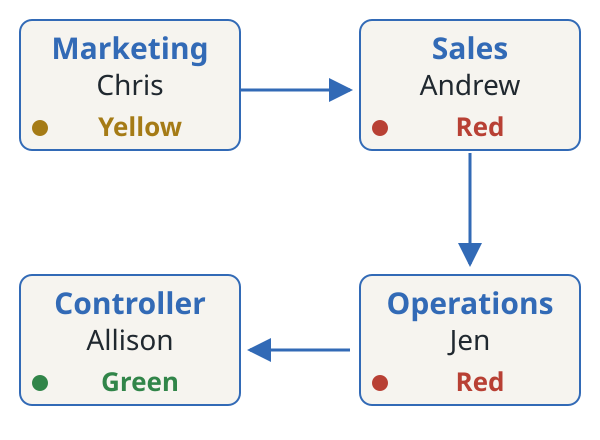
33 comp-story
Widgets measure the activity that drives results.
Track the business activity that drives results.
Qualified leads. New subscriptions. Cumulative subscriptions. Days to collect.
34 comp-decision
KFFM
Name the widgets that flow between functions.
01 · Marketing · Chris
Qualified leads
Count prospects ready for a sales conversation.
02 · Sales · Andrew
New subscriptions
Count new subscriptions during the period.
03 · Operations · Jen
Cumulative subscriptions
Count the subscriptions supported at period-end.
04 · Controller · Allison
Days to collect
Measure the time needed to collect payment.
35 comp-story
Follow every handoff to collected cash.
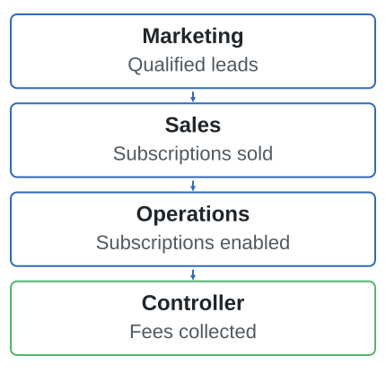
36 comp-story
Build your map in six steps.
1. Choose the key functions.
2. Arrange them in the order work flows.
3. Name each owner.
4. Connect the flow to cash in the bank.
5. Add at least one widget.
6. Colour code each function: green, yellow, red.
37 comp-story
Why does your organization exist?
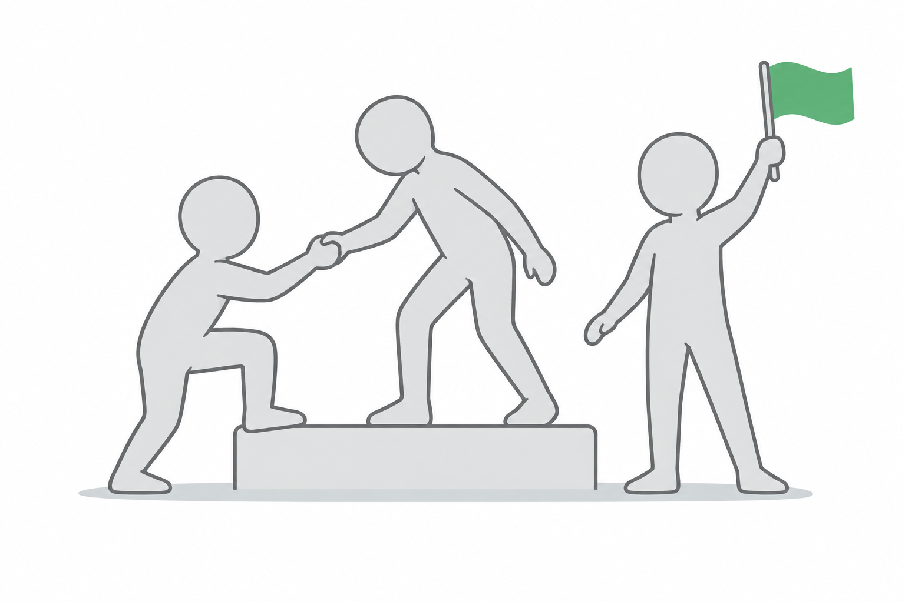
38 comp-decision
Purpose
A purpose expresses a contribution.
Mary Kay · source example
Opportunity
“To give unlimited opportunity to women.”
3M · source example
Innovation
“To solve unsolved problems innovatively.”
Merck · source example
Human life
“To preserve and improve human life.”
39 comp-story
Why does your organization exist?
Write independently. Share your answers. Agree a working statement.
40 comp-story
Core values guide everyday behavior.
Core values remain consistent as the business grows.
Use them in decisions. Hold one another accountable for the behavior.
41 comp-decision
Values
A value becomes useful when behavior is clear.
Source example
Happy
Happy to come to work. Happy to leave.
Source example
Hungry
Hungry enough to make a difference every day.
Source example
Humble
Humble enough to learn every day.
42 comp-story
What are your organization’s core values?
Your handful of rules for how you work together.
Which existing values guide your decisions and behavior?
Test each: would you build a new company around it? Would you change jobs before giving it up? Does someone who keeps breaching it not belong here? Agree the three to keep.
43 comp-story
BHAG: Big Hairy Audacious Goal
A compelling ambition for the next 10–30 years.
Connect it to why the organization exists.
44 comp-story
An audacious goal can take different forms.
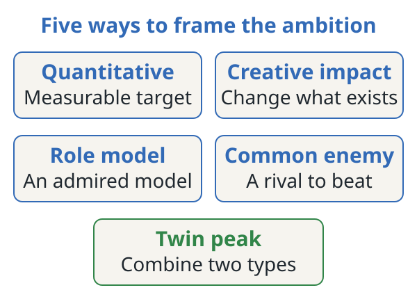
45 comp-decision
BHAG
Make the ambition concrete.
Historical example
Microsoft
“A computer on every desk and in every home.”
Historical example
Nike
“Crush Adidas.”
Historical example
Paradata
“Leading Global Payment Service Provider.”
46 comp-story
What is your BHAG?
Draft your 10–30-year ambition in words first.
Keep fiscal targets in the plan.
Write independently. Share. Agree a working statement.
47 comp-decision
BHAG
Is the ambition clear and connected?
01
Clear and compelling?
Can people understand the ambition?
02
Connected to purpose?
Does it express why you exist?
03
Can we recognize success?
Could you tell whether you had achieved it in 25 years?
48 comp-decision
BHAG
Will the ambition draw the whole team forward?
04
Exciting to you?
Does it create energy among the leaders?
05
Exciting to the wider team?
Would others want to pursue it?
06
A big step in capability?
What would you need to become able to do?
49 comp-story
Profit per X: how you will measure the BHAG.
Profit/X: profit per meaningful unit.
Shannon’s payment-business example: profit per merchant.
50 comp-story
One word for your company’s strategy?
51 comp-story
Strategy creates a unique and valuable position.
A different set of activities makes that position possible.
Michael Porter’s definition, as taught by Shannon.
52 comp-decision
Strategy
Compete to be unique.
Comparison
Best on the same dimensions
Try to outperform rivals at the same activities.
Strategic choice
Unique value
Choose a valuable position supported by different activities.
53 comp-decision
Strategy
Build a strategy you can test and refine.
Analysis
Understand
Study the market and the business.
Strategy
Choose
Define position, scope and connected activities.
Execution
Learn
Execute, observe results and test assumptions.
54 comp-story
3HAG: Three-year Highly Achievable Goal
A three-year stepping stone toward the BHAG.
Connect the future company to the capabilities and targets needed to get there.
55 comp-decision
The plan and the forecast must agree.
Direction
One-page strategic plan
Connect ambition and capabilities to annual and quarterly commitments.
Later
Widget forecasts
A 13-week widget forecast from Q2; the 12-month forecast is built after Q3 and approved at the Q4 annual.
56 comp-story
Three years means twelve quarters of progress.
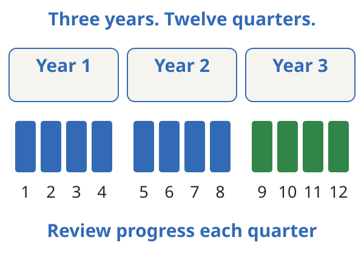
57 comp-story
Start with a shared answer. Then validate it.
58 comp-decision
3HAG
One example connects numbers to a future business.
Historical example
June 30, 2004
Year 3 ending date.
Financial results
$20 million revenue
$7 million expenses; $13 million profit during Year 3.
Financial position
$2 million cash
Cash balance at the end of Year 3.
Operating measures
Merchants
12,000 new; 30,000 cumulative.
59 comp-story
The statement describes the company it becomes.
“To be the leading North American Payment Service Provider.”
Shannon’s historical 3HAG example.
60 comp-decision
3HAG
Capabilities make the statement achievable.
Source example
Highly available payment platform
Source example
Support any currency
Source example
24×7 support
Source position goal
Top 10 payment processors
In Canada and the United States. What abilities would make this possible?
61 comp-decision
Historical example · June 30, 2004
One future. One connected plan.
Statement
Leading North American Payment Service Provider
Year 3 targets
$20 million revenue
$2 million ending cash. 12,000 new merchants; 30,000 cumulative.
Capabilities
Platform and service
High availability. Any currency. 24×7 support. Position goal: Top 10.
Known for
Make Payments EASY.
Do the capabilities and targets support this future?
62 comp-decision
3HAG
What are your three-year targets?
When
Year 3 end date
Choose the date you are planning toward.
Fiscal
Financial targets
Gross revenue in Year 3. Cash balance at year-end.
Operating
Widgets
What volumes support those targets?
63 comp-story
What will the company be in three years?
Write one sentence that describes the company you will become.
Keep numbers in the targets.
64 comp-story
What 3–5 capabilities must be in place?
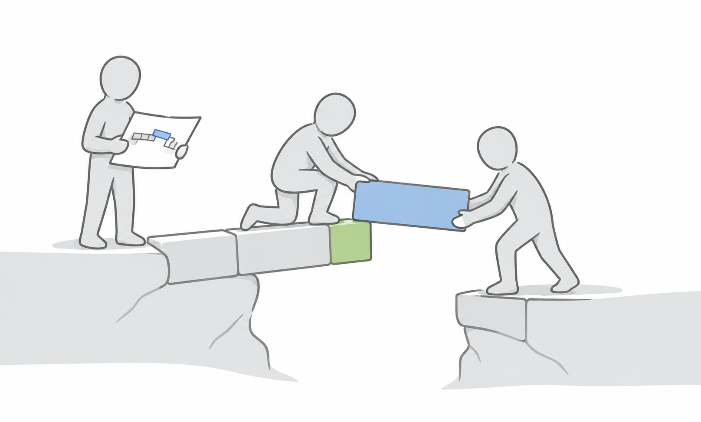
65 comp-story
What do you want to be known for?
In three years, when someone says your company name, what should people think?
66 comp-decision
3HAG
Read the whole three-year plan together.
Check
Numbers
Date, revenue, cash balance and widgets.
Check
Future company
Statement and what you want to be known for.
Check
Capabilities
The 3–5 abilities that make that future possible.
67 comp-rule
How do you feel right now?
One phrase. Five words or fewer.
68 title
From direction to action.
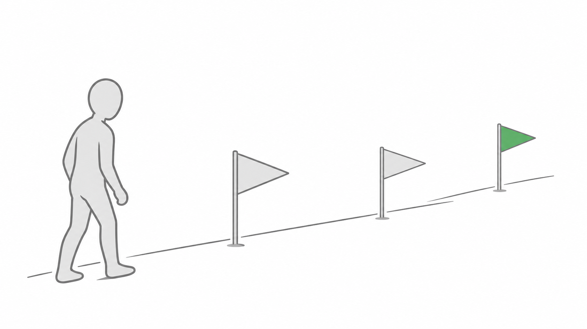
69 comp-story
Share personal good news in 5–10 seconds.
70 comp-story
What was Sunday night dinner like growing up?
71 comp-story
What stayed with you from Day 1?
72 comp-decision
Day two opening
Bring yesterday’s commitments into today.
Engage
Be present
Discuss, collaborate and listen.
Challenge
Challenge yourself and each other
Bring the difficult facts forward.
Trust
No blame. No shame.
Make it safe to speak honestly.
73 comp-decision
Day two opening
Turn yesterday’s direction into owned work.
01
Annual
Agree the year's targets and company priorities.
02
Quarterly
Choose the next quarter's targets and priorities.
03
Individual
Commit to owned work and schedule the meeting rhythm.
74 comp-story
How many consecutive months have you exceeded your widget and cash goals?
Compare the targets with the actual results.
75 comp-story
One word for execution at your company?
76 comp-decision
Execution
Execution needs three disciplines working together.
01
Priorities
Choose the work that advances the longer-term plan.
02
Keeping score
Use measures to see progress and anticipate problems.
03
Communication rhythm
Meet regularly to make better, faster decisions.
77 comp-story
Connect direction to individual commitments.
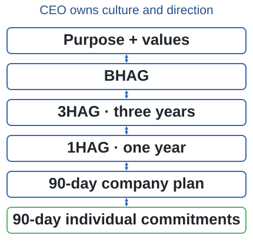
78 comp-story
Connect each capability to owned work.
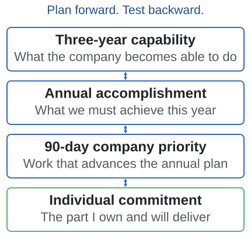
79 comp-story
Each person’s work builds the capability.
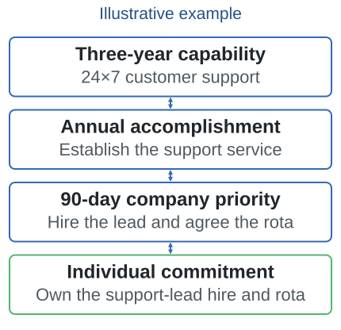
80 comp-causal
Cascade
Set shorter-term targets that support the three-year plan.
3HAG
Three-year targets
Gross revenue, ending cash and widgets.
→
1HAG
Annual targets
The progress this year must deliver.
→
QHAG
Quarterly targets
The progress this quarter must deliver.
81 comp-decision
Priorities
Make every priority a clear commitment.
Result
What will we achieve?
Owner
Who is accountable?
Name one person.
Measure
How will we measure success?
Define success and how you will track progress.
Timing
Due date
When will it be done?
82 comp-decision
SMART: Specific · Measurable · Achievable · Realistic · Timebound
Can you deliver the priority you are proposing?
Achievable
Is the result within reach?
What evidence supports the proposed outcome?
Realistic
Can you accomplish it with your resources?
Check capacity, dependencies and competing commitments.
83 comp-decision
Priorities
A target names the result. A priority names the work.
Measure
Target
The financial or operating result you want to reach.
Commitment
Priority
A specific accomplishment that helps produce that result.
84 comp-story
A clear priority states the outcome, owner and deadline.
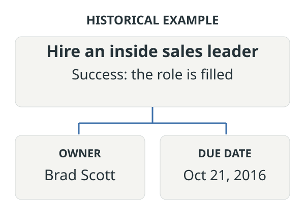
85 comp-decision
Priorities
Make the accomplishment specific enough to verify.
Historical example
Release version 1.6
Software platform released by September 30, 2016. Owner: Ben Brown.
Historical example
Deliver 100 qualified leads
Due November 15, 2016. Owner: Jane Scott.
86 comp-decision
Keeping score
Use financial numbers and operating measures together.
Results
Financial numbers
Gross revenue and cash balance.
Business activity
Widgets
Leads, subscriptions, merchants or other operating units.
87 comp-decision
Keeping score
A useful measure supports a decision.
01
Align
Connect team measures with company targets.
02
See progress
Predict problems and check actual results.
03
Test priorities
Show whether the work delivers its intended outcome.
88 comp-story
A regular rhythm turns the score into decisions.
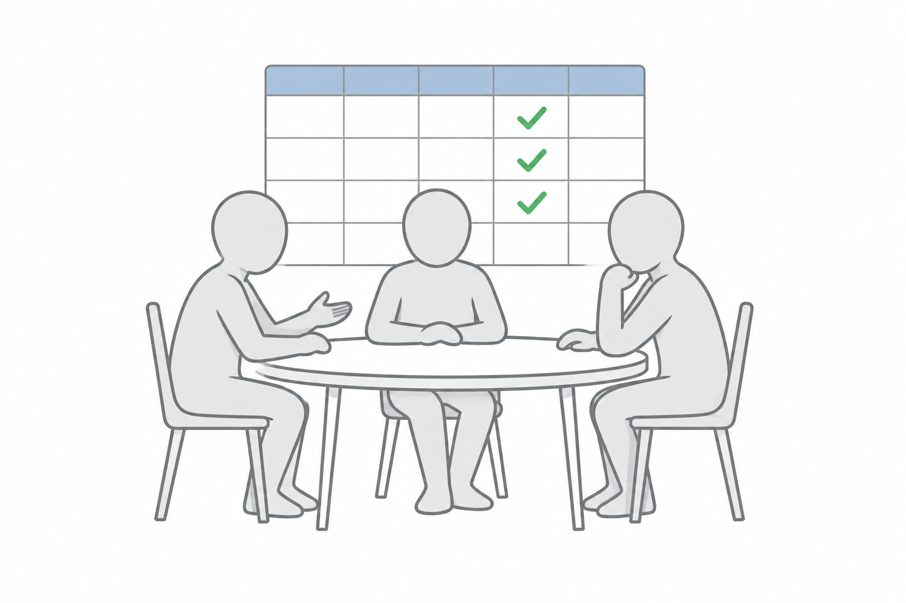
89 comp-decision
Rhythm teaching
Connect daily. Solve issues weekly.
Daily
Daily huddle
7 to 10 minutes, every day. The facilitator rotates.
Weekly
Weekly leadership meeting
60 minutes. The CEO owns it.
Book
Both in Metronome
Book them a year ahead. Commit for at least 30 days.
90 comp-decision
Rhythm teaching
The rest of the rhythm comes later.
Review
Monthly
Leadership plan review: up to 4 hours. Company town hall: up to 1 hour.
Plan
Quarterly
Review strategy and plan the next 90 days: up to 8 hours.
Reset
Annual
A two-day strategy planning session.
91 comp-decision
Rhythm teaching
Make the rhythm dependable.
Calendar
Book a year ahead
Purpose
Use known standing agendas
Readiness
Prepare before meetings
Improve
Ask for regular feedback
92 comp-decision
1HAG: One-Year Highly Achievable Goal
What are your annual targets?
01
Period
Confirm the fiscal year and its start and end dates.
02
Financial
Gross revenue and ending cash balance.
03
Widgets + owners
Agree operating targets. Name an owner for every measure.
93 comp-story
What is the #1 priority for this fiscal year?
What must be accomplished to move the three-year plan forward?
Write independently. Agree the outcome, owner, measure and due date.
94 comp-story
What else must be accomplished this year?
Ideally three, up to five company priorities in total, including #1.
Give each an owner and a measure of success.
95 comp-decision
QHAG: Quarterly Highly Achievable Goal
What are your quarterly targets?
01
Period
Confirm the next quarter and its start and end dates.
02
Financial
Gross revenue and ending cash balance.
03
Widgets + owners
Agree operating targets. Name an owner for every measure.
96 comp-story
What is the #1 priority for the quarter?
What must be accomplished now to deliver the annual plan?
Write independently. Agree the outcome, owner, measure and dates.
97 comp-story
What else must be accomplished this quarter?
Ideally three, up to five company priorities in total, including #1.
Connect each to an annual priority. Give each an owner and a measure.
98 comp-decision
Individual
What are your priorities for the quarter?
Company
Your contribution
Include the company priorities you own. Enter your priorities in Metronome.
Measure
Critical number
The one number that shows whether your quarter is on track.
Commitment
Up to five work priorities
Count the company priorities you own within these five work commitments.
Development
Professional development
Add a skill or behavior to develop, beyond the five work priorities.
99 comp-story
Read your commitments to the team.
100 comp-decision
Meeting rhythm
Schedule the meetings before you leave.
Daily
Daily huddle
Day, time, owner and start date.
Weekly
Weekly leadership meeting
Day, time and start date. The CEO owns it.
Planning
Quarterly and annual
Book the planning sessions ahead.
101 comp-story
Make progress visible before the meeting.
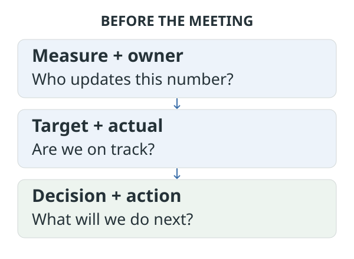
102 comp-story
What three messages will you share with the wider team?
Agree three clear messages from these two days.
About 15 minutes. Who will share them, and when?
Every leader tells their team the day after.
103 comp-decision
Follow through
Leave with one shared plan.
Accountability
Function Chart + KFFM
Keep the maps, owners, handoffs and measures.
Direction
Purpose, values and ambition
Capture the agreed purpose, values and BHAG.
Plan
3HAG, 1HAG and QHAG
Record targets, key capabilities and company priorities.
Ownership
Individual commitments
Record commitments, measures and owners in Metronome.
104 comp-decision
Follow through
What is the homework?
Metronome
Enter the plan
The whole plan, each leader's priorities and the company metric.
Finance
Widgets in the budget
Add the primary widgets to the current budget or forecast.
Meetings
Rhythm and messages
Daily huddle and weekly meeting booked. Every leader cascades the 3 key messages.